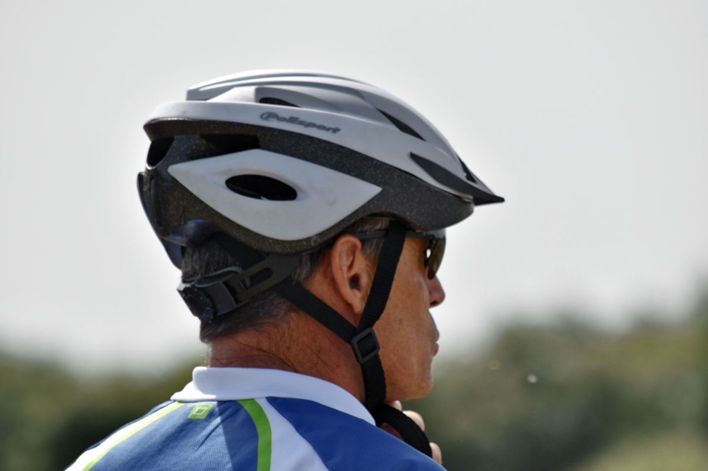

Per ciclismo si intende l'utilizzo di una bicicletta come mezzo meccanico a scopi differenziati. L'accezione più comune di "ciclismo" è riferita allo sport del ciclismo, ma in realtà lo spettro è più ampio abbracciando anche gli usi trasportistici, quelli ricreativi e cicloturistici e quelli militari.
Il mezzo meccanico ovvero la bicicletta ha cominciato a diffondersi nel XIX secolo e oggi sono circa due miliardi le persone, di ogni età ed estrazione sociale, che nel mondo utilizzano tale veicolo. È tutt'oggi il principale mezzo di trasporto in molti paesi in cui la motorizzazione di massa non si è ancora sviluppata a pieno. In altri paesi in cui questo processo è già avvenuto, a causa delle conseguenze negative (congestione, inquinamento, vivibilità), si è avviato un processo di riduzione ed uscita dal trasporto motorizzato.
Vedi anche: